Air Jordan I
Designer: Peter Moore
Released: 1985
Original Price: $65
This Air Jordan was the only one in the series to feature the familiar Nike Swoosh logo. And predating the Jumpman logo, the OG shoe featured the Wings logo - a basketball with wings stretching from both sides and "Air Jordan" printed above the ball.

Air Jordan II
Designer: Peter Moore
Released: 1986
Original Price: $100
The AJ II shared a silhouette with the Nike Air Python that released in 1987, including a faux lizard skin upper and swooping lines that resembled those of a sports car which would factor prominently into the Jordan line in years to come.
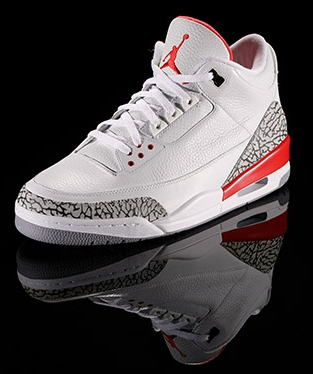
Air Jordan III
Designer: Tinker Hatfield
Released: 1988
Original Price: $100
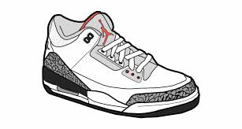
Released in 1988, the rollout of the AJ III included TV spots featuring actor/director Spike Lee as Mars Blackmon, from his 1986 film "She's Gotta Have It" sparking a series of catch phrases heard 'round the sneaker world.
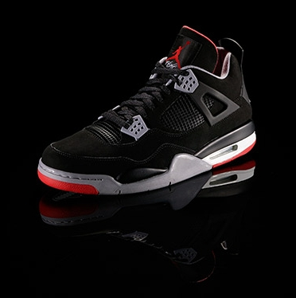
Air Jordan IV
Designer: Tinker Hatfield
Released: 1989
Original Price: $110

Wearing the AJ IV, MJ was voted to his fifth consecutive All-Star game and won the league scoring title for the third consecutive year. One of the most memorable AJ IV moments was when Michael hit the series-clinching, hanging jumper over Cleveland's Ehlo in the round one of the playoffs.
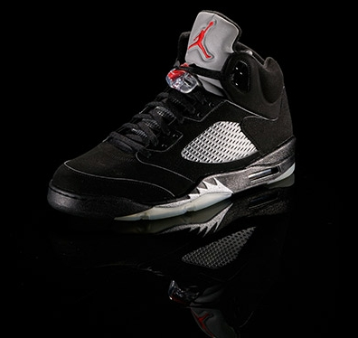
Air Jordan V
Designer: Tinker Hatfield
Released: 1990
Original Price: $125
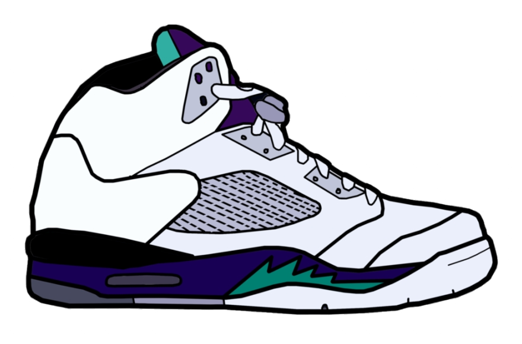
An embroidered Jumpman logo graced a tongue that, in certain colorways, also featured 3M reflectivity. "Air Jordan" was stitched inside. Another first on the AJ V was an offset ankle collar, designed to boost support while offering more flexibility.
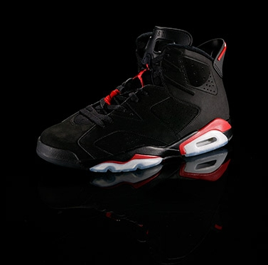
Air Jordan VI
Designer: Tinker Hatfield
Released: 1991
Original Price: $125
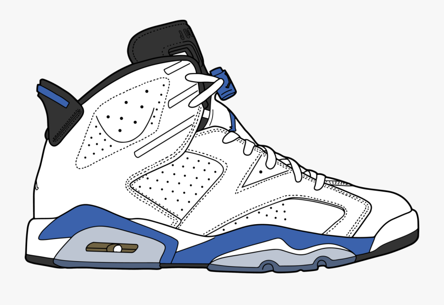
Carrying over from the AJ V were the sculpted midsole, Vis-Air heel cushioning, and translucent ("frosty") outsole. And while the original releases consisted of leather, the Black/Infrared colorway included rich suede.
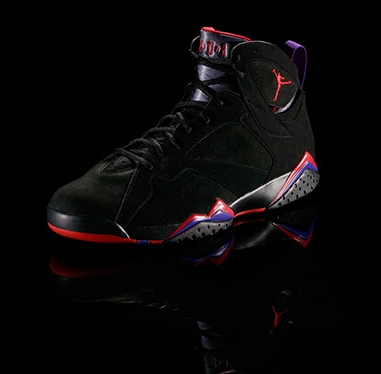
Air Jordan VII
Designer: Tinker Hatfield
Released: 1992
Original Price: $125
The visual paid homage to west African tribal art, featuring bold lines on the midsole. A USA colorway released later that year commemorated the "Dream Team," Team USA that went on to dominate international competition. This was white, trimmed in blue, red, and gold.
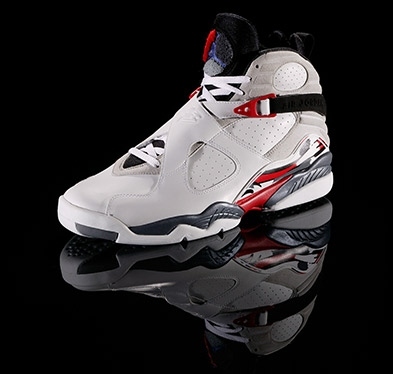
Air Jordan VIII
Designer: Tinker Hatfield
Released: 1993
Original Price: $125
Earlier, in February, MJ saw the launch of his Air Jordan VIII. This edition of his signature footwear, the heaviest ever in the line, featured a splash of color along the heel and on the midsole and outsole.
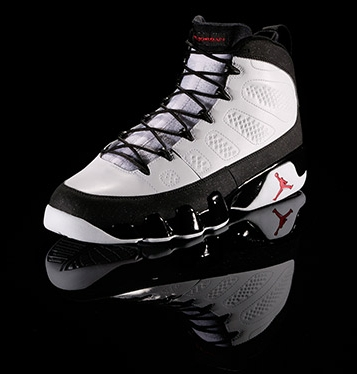
Air Jordan IX
Designer: Tinker Hatfield
Released: 1993
Original Price: $125
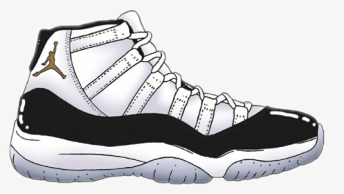
The AJ IX became the first Air Jordan that the man himself would never wear in competition. Though, ironically, it's the AJ IX that's depicted on the statue of MJ outside the United Center in Chicago.
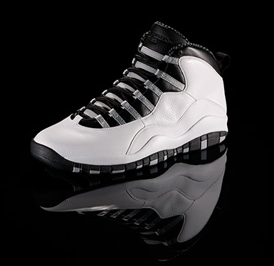
Air Jordan X
Designer: Tinker Hatfield
Released: 1994
Original Price: $125
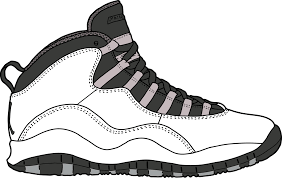
The AJ X featured a padded collar, pull tab at the heel, and an elastic band lacing system. Nike built the midsole of the AJ X of Phylon lightweight foam. It was connected to a rubber outsole that listed his career achievements on alternating stripes.
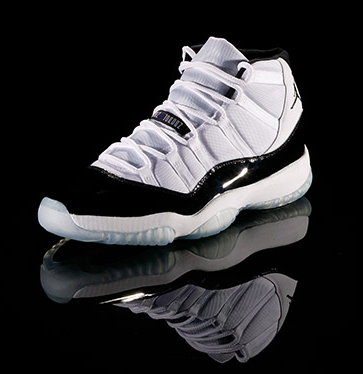
Air Jordan XI
Designer: Tinker Hatfield
Released: 1995
Original Price: $125
Tinker Hatfield watched video of Michael Jordan and noticed MJ's foot would roll off the foot bed on hard cuts. So Hatfield took that opportunity to blend substance with style, adding patent leather for the first time on a basketball shoe.
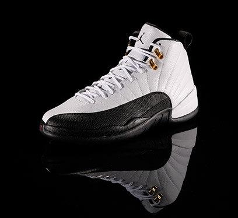
Air Jordan XII
Designer: Tinker Hatfield
Released: 1996
Original Price: $135
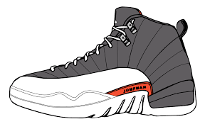
This was the first Air Jordan to feature an ultra-responsive Zoom Air unit, as well as lateral and medial support panels designed to work together to create one of the most durable shoes in the signature series. The shoe also had a full-length carbon fiber shank like its predecessor.
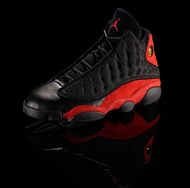
Air Jordan XIII
Designer: Tinker Hatfield
Released: 1997
Original Price: $150
Michael Jordan attacked the court - and opponents - with the quickness, power, and ferocity of a predatory cat. Tinker Hatfield tapped into this feel for the Air Jordan XIII.
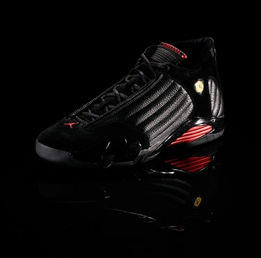
Air Jordan XIV
Designer: Tinker Hatfield
Released: 1998
Original Price: $150
The shoe's asymmetrical collar was designed to blend ankle support with flexibility, They included dual Zoom Air units into the outsole, and the low-profile heel and forefoot gave the AJ XIV a sleek silhouette as well as a comfortable ride.
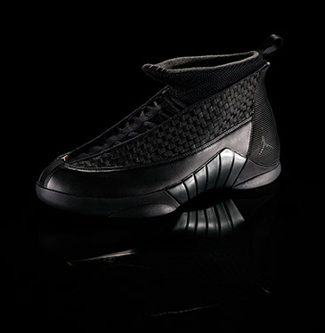
Air Jordan XV
Designer: Tinker Hatfield
Released: 1999
Original Price: $150
Michael Jordan announced his retirement on Jan. 13, 1999, prior to the beginning of the lockout-shortened season. So designer Tinker Hatfield was once again challenged to design a shoe that MJ would never wear on the court. Hatfield again tapped an aspect of MJ's playing style.
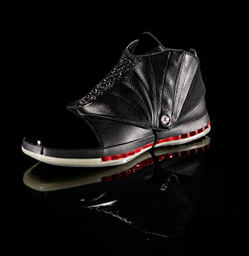
Air Jordan XVI
Designer: Wilson Smith III
Released: 2001
Original Price: $160
Smith drew inspiration from marching boots, high-performance automobiles, and architecture. He designed the upper of the AJ XVI with lightweight mesh and included a full-length inner booty for sock-like comfort.
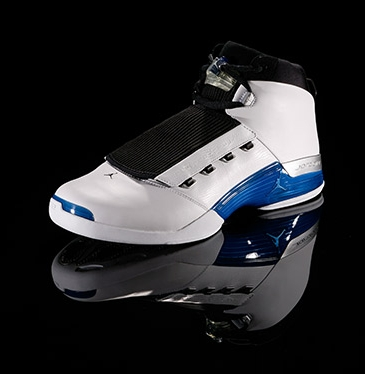
Air Jordan XVII
Designer: Wilson Smith III
Released: 2002
Original Price: $200
When Michael Jordan resigned as the Washington Wizards' president of basketball operations and returned to the court, he did so in the Air Jordan XVII. Wilson Smith III made a return as well, as the designer of the AJ XVII.
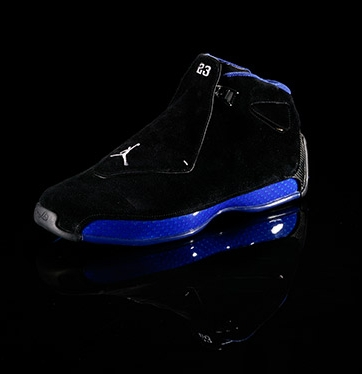
Air Jordan XVIII
Designer: Tate Kuerbis
Released: 2003
Original Price: $175
The Air Jordan XVIII marked another transition for Michael Jordan and the design team for the brand that bears his name. The shoe's release year, 2003, saw MJ's final NBA game, and Tate Kuerbis stepped in to design the 16th edition of MJ's signature shoe.
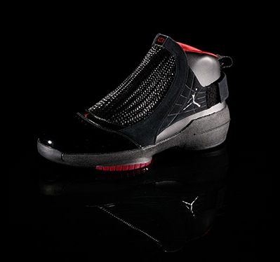
Air Jordan XIX
Designer: Tate Kuerbis
Released: 2004
Original Price: $165
The AJ XIX's unique box opened from the middle, and each shoe came in a netted bag. Five colors of the original AJ XIX included the Black/Red, White/White/Grey, White/Black, White/Red, and White/Navy. Four AJ XIX SE colorways were released, as were four low-top models.
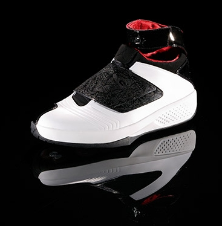
Air Jordan XX
Designer: Tinker Hatfield
Released: 2005
Original Price: $175